M3OPD-Reasoner｜多教师在线蒸馏如何改变混合强化学习的起点
Nguyen Quang Trung、Hoang Phan、Shuo Sun、Longyin Zhang 和 AiTi Aw 研究如何把图像 STEM、图像感知和视频推理三类能力训练进一个九十亿参数的视觉语言模型。一作来自 A*STAR，合作机构为 VinUniversity。本文依据北京时间 2026 年 11 月 18 日提交的 arXiv v1 预印本。作者的项目页、代码仓库、两份数据页和检查点集合入口可访问，训练和评估结果来自论文。公开入口与可完整复跑之间还需要核对版本、数据快照和检查点。 论文 · 项目页 · 代码 · SFT 数据 · RL 数据 · 作者集合
混合强化学习从基础模型或监督微调模型出发时，要同时把不同领域的能力合进一个策略，并继续提高推理能力。若先用多教师在线蒸馏把各域能力交给同一个学生，再把相同的训练问题用一遍，可验证奖励还能带来额外提升吗？
1. 背景和问题
1.1 三类视觉推理共用一个模型
图像 STEM、图像感知和视频是论文给训练提示设定的三个域。图像 STEM 中，题目可能提供几何图、科学示意图或带有多个约束的图形逻辑问题，模型得先从画面提取实体关系，再把关系变成可以推导或检验的结论。读文档、识别字符、清点目标和定位物体归入图像感知，关键证据往往落在少数细节或局部区域。视频题的证据分散在多个画面，可能需要找到动作发生的时间、辨别前后顺序，或沿着镜头变化还原空间关系。三个域中都可能出现选择题，输出仅有一个字母，产生正确答案所需的视觉证据和推理过程却差异很大。正因为输出格式可以统一，训练路线容易表面上做成一个问题集合，域之间不同的错误结构仍然存在。
论文比较的常规路线是先把多个域的轨迹混合起来做监督微调，再在混合提示上以可验证奖励训练一个模型。监督阶段能改变生成的格式、篇幅以及推理表达习惯，强化学习阶段依靠答案校验改变哪些完成路径获得正优势。另一条基线直接对基础模型做混合强化学习，保留基础模型原有的生成习惯，训练中再由奖励调节。如果一种初始化更容易生成正确的答案框，另一种更容易探索多个假设，二者即使用同一道训练题也会抽到不同的回答，产生不同的组内相对优势。是否经过监督阶段因此是独立的实验变量。原文将直接 MixRL 与从 MixSFT 出发的正式 MixRL baseline 同时列出，使读者能看到在这一底座、轨迹和奖励设置下，监督预热如何改变强化学习的结果。
多域混合训练的平均成绩可能掩盖方向相反的变化。对数学题而言，较长的推导可以容纳尝试和复核。对视频选择题而言，重复描述大量无关片段可能推迟提交答案。有限的混合训练预算需要同时处理这些差异，而数据配比接近并不会自动使各域产生同等梯度或同等比例的有效回答组。引言引用前人对能力之间梯度冲突的观察来说明采用专家的动机，本文主要给出训练路线及评测对照，未直接测量这里三域的梯度夹角。把某个基准的负向变化解释为具体的梯度冲突，还需要同批样本、同检查点和分域梯度统计。这样的证据边界也解释了为什么总体均值、域均值和逐基准结果需要同时读。
1.2 从学生自己的错误取监督
逐域训练专家还有另一种合并方法，即将专家的已训练权重合并。这篇论文主要展开的是在线蒸馏路线。离线蒸馏常把教师生成好的完整轨迹拿来模仿，学生训练所见的前缀多由教师决定。比如老师一开始准确定位到视频的有效片段，接下来写出来的每一步都建立在那个定位上。真实推理中学生若先关注到错误片段，就要在自己的错误前缀上给出后续词，离线轨迹中很少出现这种状态。本文的做法是学生先写完整回答，教师再在学生的各个已有前缀上打分。即使回答最后出错，只要没有触发长度截断掩码，教师仍有机会对这些前缀赋予细粒度反馈。这里的在线描述的是训练分布来源，实际实现允许有限版本滞后，教师参数在学生蒸馏期间固定。
同一个学生同时承接多个教师时，哪里使用哪个教师也是设计变量。本文依赖数据附带的人工域标签，每条训练提示只分给对应的专家。同一视觉问答既可以需要读坐标，也可以需要代数推导，硬路由仍然把整条回答交给一个域的教师。这样能让打分职责和训练数据生成路径清楚，也留下了跨域题目如何覆盖的疑问。论文的教师结果只来自各自的本域评测，三个教师的分数拼起来能描述专长集合，不能展示任何一个教师在三域上都具备同样水平。学生应当达成的目标是用同一套权重在三类测试中接近这份拼接参照。面对没有域标签的部署请求，模型已经完成蒸馏，只运行学生，训练时的标签路由无需随部署请求一起过去。
1.3 为什么同一批问题还能再用一次
同一条训练提示在不同阶段给出不同的信息。训练领域教师时，只在域内采样多个回答，评判器给可验证分数。训练学生时，依旧见到这些问题，不过目标改为在学生前缀上拟合教师的候选词概率，正确答案字段不进入蒸馏损失。最后一段 MixRL 再度使用问题和金答案，组内相对奖励从学生此时能生成的回答中产生。给定同样的问题，基础模型可能在八个回答里几乎全错，蒸馏学生也可能已经八个全对，两个起点最终参与更新的提示子集都会受动态过滤改变。比较这些路线需要锁住训练提示的来源和最后阶段的大部分配置，再观察它们在同一评测上的差异。拿训练集合重复使用一事直接推断没有额外学习，会漏掉这三种监督信号之间的变化。
这里还要分开训练信号与可验证能力。图像 STEM 的最终数值能匹配金答案，与中间确实读对图形或每一步都正确，是不同证据。OCR 可比对字符串，空间定位有重叠度，视频区间有时序交并比，三种匹配器能校验的对象与误差容忍度也各不相同。模型可能学会少说犹疑语言、只写一个答案框，或者更善于遵循提示中的单位。论文用独立基准、推理行为统计和案例对这些现象作补充，但文本中的时间戳和自我检查短语都只是可观察代理。读到分数提升时，需要问增益集中在哪些任务和回答形式，哪些高分基准仍出现退化，以及训练奖励有没有有效区分这些情况。
对推荐模型而言，较贴近这套研究的场景是让一个内容理解模型同时处理封面文字、图像属性、视频片段和与内容相关的推理。能从离线内容字段构造可核对监督的任务，可以先用专家建立本域质量参照，再用学生真实输出作教师评分前缀，按任务拆开比较迁移。论文的分布来自公开问答、图表和视频来源，实验终点是基准准确率。推荐消费链路还有候选覆盖、视频采样成本、标签稳定性和下游决策这些额外变量，行为指标也没有金答案可以直接套用。可迁移的是实验结构，例如把各域能力是否在单模型里保留，与接续奖励训练是否进一步改善分开核实。把所有指标压成一个总体均值，会使上线关心的小流量任务在这两段里如何变化更难看见。
2. 方法
2.1 统一配方与训练数据
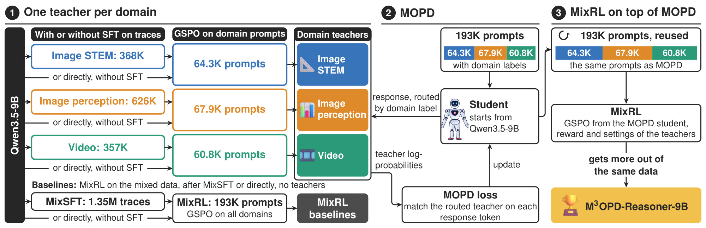
Figure 2 从左到右对应训练的三次交接。左侧三种颜色分别标出图像 STEM、图像感知和视频，同一基础模型可以先在本域轨迹上做一次 SFT，再用该域的可验证题目训练，也可以跳过轨迹预热直接用 GSPO 得到三份权重。左下角灰色路线把三个域的数据混合，只训练一份模型，既允许先做 MixSFT 再做 MixRL，也允许直接从底座出发。中间的学生另从基础模型初始化。它见到的是带域标记的提示并独立生成回答，路由箭头把这条回答交给冻结教师，返回的是逐位置候选词及概率，梯度只更新学生。最右侧继承中间学生权重，再用同一提示并集和可验证奖励更新一次。这样训练后只有一份学生权重供推理使用。图中的两条可选教师路线各自训练一个学生，最终模型来自直接 GSPO 教师那条，预热分支保留为内部比较。左侧各域数据也会在中间和右侧重新进入，因此解读横向对照时应追踪检查点、监督信号与回答生成来源，不能把图中重复出现的提示数量当成新采集的数据量。
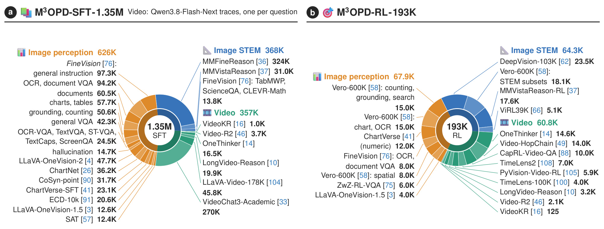
Figure 3 左环的监督数据包含约三十六点八万条图像 STEM、六十二点六万条图像感知和三十五点七万条视频轨迹。图像 STEM 主要来自 MMFineReason，图像感知部分的 FineVision 又按通用指令、文档、图表和计数等拆开，视频侧的 VideoChat3-Academic 占了显著份额。右环是另一种分布，图像 STEM 的 DeepVision、图像感知的 Vero 子集，以及视频侧 OneThinker 和 Video-HopChain 等进入规则可判的提示池。按正文的精确数字，三域为 64,307、67,915 和 60,805 条，共 193,027 条。轨迹池在图像感知上更重，提示池的域级数量更接近，不过答题类型仍然不同。比如选择题全池 70,573 条，视频域有 13,881 条时序定位，图像感知域则集中提供 OCR 和框点定位。环图只告诉我们汇集后的数据来源和规模，从这些比例还推不出更新时三域等权。回答长度、有效组过滤、正确率以及训练时的采样会进一步改变各类样本的贡献。两侧来源说明，数据复用指右侧提示池在三种优化中反复出现。左侧轨迹池的文本规模不能和右侧训练提示数相加来估算主路线的独立问题覆盖，直接教师和最终学生也没有消费这些左侧轨迹。
生成监督轨迹时，把媒体、问题和金答案一并给生成模型。作者剔除最终答案不匹配、提及给定答案、拒绝金答案、截断或生成退化的回复。两个图像域采用 Qwen3.5-9B 自轨迹，视频采用 Qwen3.8-Flash-Next 轨迹。它们是监督文本的生成器，后续给蒸馏打分的是另行训练的三个 GSPO 教师。SFT 池内部按相似媒体和规范化问题去重，SFT 与 RL 按提示和媒体哈希分离。附录表 9 对二十一项评估做污染检查，包括规范化精确文本、十三元词组至少覆盖题目一半或包含模板时至少九成、图像 SHA-1 和感知哈希、视频源标识及四分之一、二分之一与四分之三时点的帧哈希。图像感知哈希距离四以内还用更长哈希复核。附录分别列出 SFT 三域剔除 45、158、0 条，RL 剔除 355、77、592 条。这些是公开规则能找到的重合。全阶段使用原生思考模板，无系统指令，清除源题的格式指示并留下按答案类型指定的一行。
2.2 共享奖励与逐域 GSPO
符号解释：$R$ 是一条采样回答的总奖励，$R_{\mathrm{acc}}$ 是按答案类型计算的准确项，$R_{\mathrm{fmt}}$ 是格式项。当格式项未满分时，准确项强制归零。选择、数学、短答和计数按二值计分，OCR、框点与时间段允许连续得分。数学用 Math-Verify 和数值回退，显式单位冲突会影响匹配。OCR 使用归一化编辑相似度，设阈值并排除数字序列不一致。多框用匈牙利匹配后的交并比和除以预测、真值框数的较大者。时序定位对区间匹配。匹配器只能比较提交内容，思考中的证据链不会逐步被判。
符号解释：有效思考块由聊天模板先行打开，模型需关闭恰好一次，并在关闭前后各有非空文本。计数的框只来自关闭标签之后。半分格式项在总奖励上最多贡献 0.05，格式正确但答错可得 0.1。这个设置给结构留了少量分辨率，同时让不合法结构丢失任务分。按附录表 15，动态组过滤依据准确项相等，不能用总奖励中格式差异去推断这些组仍参与更新。连续准确项的场景也要按判分值看，和简写的全对全错描述有口径差异。
符号解释：$x$ 包含媒体和问题，$G$ 是旧策略对它采样的回答数，此处为八。$\theta$ 表示当前策略，$\widehat A_i$ 为第 $i$ 条回答的组内标准化奖励，$s_i$ 是当前策略相对采样策略的序列比，$\bar s_i$ 是裁剪后的比值。正优势回答的比值过高时，继续增大比值受上限约束。负优势回答则由另一侧的裁剪约束过度更新。同一回答各位置共享序列级优势和比值，教师训练依靠这个目标在本域强化可验证的完成路径。
符号解释：$y_i$ 是响应，$|y_i|$ 为生成长度，$\pi_{\theta_{\rm old}}$ 是实际采样用的参数版本，$\mu$、$\sigma$ 是组内奖励均值与标准差，$\epsilon_l$、$\epsilon_h$ 分别为上下侧裁剪幅度，表 15 给出三和四乘十的负四次方。长度开方相当于在对数域按生成长度取平均。三个域的 GSPO 共享优化目标，各用自己的题目和检查点，可选择经过本域监督轨迹预热。训练期动态收集合格提示填充批次。作者报告的典型 MixRL 步有四个小批更新，基线与接续分支每步提示数分别为 252 和 256。论文将目标、采样与优化设定视为共享，附录列出的这类批量差别仍需在复现实验中记录。
2.3 多教师在线蒸馏
符号解释：$t$ 为响应位置，$r(x)$ 是提示的域标签，$v$ 是教师选出的候选词元，$K_t$ 是路由教师在同一学生前缀上的前 32 个候选。$p_\theta$ 和 $q$ 是学生、教师在这些位置上的概率。集合上的概率和可能小于一，线性项使每个求和项在两概率相等时取零并保持非负。它只约束教师给出的支持集，且保留截断集合的概率尺度。教师与学生共享 tokenizer 和媒体处理器，教师在学生回答结束后用一次预填充打分，教师不承担解码。两边对数概率下限均为负十，学生一侧用未截断量的梯度。计算端按位置分块取学生概率，避免整条长回答同时持有全词表单精度张量。训练直接对学生概率反传，奖励或参考策略 KL 均关闭。
符号解释：$B$ 包含提示与其学生回答，$m(y)$ 在生成达到 16,384 上限且没有结束标记时为零，否则为一。有效回答的有效词元进入分子和分母，长回答因有效词元多而有更多权重。每位置损失大于十后在裁剪区间之外没有梯度。按 Algorithm 1，每步 1,008 个提示，各生成一次，训练端每步做一次 AdamW 更新并同步给采样池。采样可与上一步更新重叠，允许至多两个策略版本的差距，超出边界时等待未完成样本。据附录 E，这条蒸馏流水线因版本滞后等待，GSPO 附录配置则丢弃过旧样本并使用截断的重要性修正。序列截断掩码针对生成完整性，若长视频或难题更易到达上限，留下的蒸馏支持也会随域改变。
2.4 同提示接续 MixRL
接续阶段从最终 MOPD 检查点出发，在三个领域提示的并集重新采样。更新恢复为按格式与答案验证计分的 GSPO，停止读取教师概率，也不再以式（4）的教师候选词决定梯度。这样即使学生已接近教师，学生自己的回答组仍可能出现能由金答案区分的新完成路径。动态组过滤令学习依赖当前候选回答的差异。变化可能表现为解题正确率，也可能表现为先前习得的表达方式保留、视频回复更短或某些任务退化。最后保存的检查点以一套权重执行全部三域，训练侧的独立教师服务和题目域标签已完成作用。作者将这一阶段与同题库的两个混合强化基线比较。它提供了同数据、不同起点的直接观测，完整配方为到达这个起点已额外付出教师训练和蒸馏预算。
3. 实验结果
3.1 统一评估口径
内部评估共 21 个基准，三个域的基准数分别为八、八、五。图像 STEM 包含 DynaMath、EMMA、LogicVista、MathVerse、MathVista、MMMU、MMMU-Pro、We-Math，感知包含 AI2D、CountBenchQA、CV-Bench、HallusionBench、MMStar、OCRBench、RealWorldQA、SimpleVQA，视频包含 LongVideoBench、TempCompass、Video-Holmes、Video-MME、VSI-Bench。用 lmms-eval 对每题采样八次，以温度 0.6、top-p 0.95、top-k 20 和 32,768 回复词元上限计算 avg@8。这是八条生成回复准确率的均值，和其中任一条答对的概率不同。视频帧最多 65,536 像素，短于 150 秒按每秒一帧取样且至少四帧，较长视频等距取 150 帧。报告的总体均值按二十一个基准等权，三个域在总体中天然有不同权重。We-Math 采用严格分数，SimpleVQA 使用标准化匹配或 Qwen3.8-27B 裁判，DynaMath 统计生成变体。不同基准的题目单位和评判机制要在逐项复现时另行锁定。
3.2 SFT 轨迹与阶段贡献
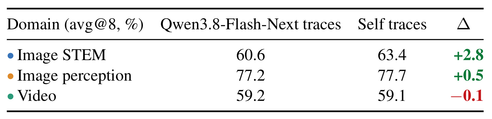
Table 1 的每一行是在同一域内，分别用外部生成器轨迹与基础模型自轨迹做监督微调，再以该域评估集比较两个模型。图像 STEM 结果从 60.6 到 63.4，图像感知从 77.2 到 77.7，视频则从 59.2 到 59.1，全部以准确率百分点计。因而作者在两个图像域用自轨迹，视频用外部轨迹。这个选择针对监督阶段，它既没有比较两个生成器谁在推理时更强，也没有单独测量这些轨迹对最终强化学习的因果效果。两种生成过程都拿到了金标准答案，写出的轨迹属于已知结果再组织过程。附录报告图像自轨迹通过筛选的比例为 78.1%，外部视频轨迹为 99.1%，分母来自不同域和生成器，差值不能解释为统一的模型相容性。视频上十分之一个百分点也缺少方差信息。它可以解释作者为何采用这一数据配方，但还不足以给视频轨迹生成器排序。更有信息量的是图像 STEM 在选过自轨迹后，MixSFT 仍出现明显削弱，所以 SFT 整体退化无法归因于作者一律采用外部模型文本。需要把轨迹来源、训练方式和随后检查点分开比较。
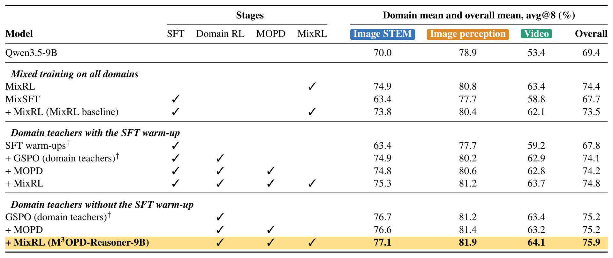
Table 2 先读训练阶段的勾选，再读四列准确率。基础模型总体 69.4，直接从底座做 MixRL 得 74.4，先 MixSFT 后 MixRL 的正式基线得 73.5，MixSFT 检查点本身为 67.7。预热分支中，三个教师的拼接均值 74.1，蒸成一个学生后 74.2，再做 MixRL 达 74.8。直接 GSPO 分支的教师拼接、学生和最终模型依次为 75.2、75.2、75.9。直接教师三域为 76.7、81.2、63.4，蒸馏后为 76.6、81.4、63.2。四舍五入后的总体相等涵盖了两个域各有轻微下降和感知略增。对照同从底座初始化、使用同一提示并集的直接 MixRL，MOPD 总体多 0.8 点，视频却低 0.2 点。接续阶段单独为最终模型贡献总体 0.7 点，三域从 76.6、81.4、63.2 到 77.1、81.9、64.1。把最终模型相对基础模型的 6.5 点都记为 MOPD 会漏掉接续阶段。相对正式基线最终高 2.4 点，它体现的是整条训练路线差异。匕首行拼了三个模型各自专长领域的分数，只有后两行能说明单个模型承接三域。预热自身也有两种口径。各域预热模型的三份成绩拼为 67.8，单一 MixSFT 的 67.7 来自另一条配置。后续教师分别在三个分片上优化，不能用前者替代同一 MixSFT 检查点。三域基准数不同，表中总体也不能直接取三列的算术平均。
3.3 榜单得失与外部比较
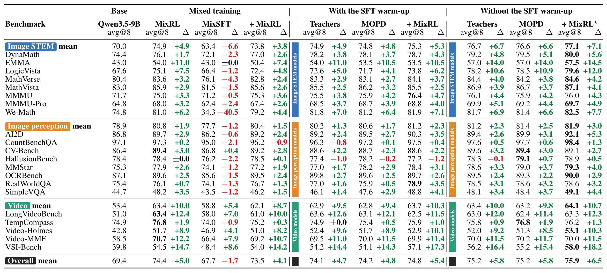
Table 3 给出同协议的逐项结果，列组区分混合训练、预热教师路线和直接教师路线，带三角符号的每个差值以基础模型为分母。逐列搜索反例能看到，直接 MixRL 的 LongVideoBench 为 63.4，稍高于最终模型的 63.3，Video-MME 为 70.7，同样高于最终的 70.0。最终模型在 VSI-Bench 由底座的 39.8 提至 58.0，直接 MixRL 为 54.5，视频总体均值虽只比直接 MixRL 多 0.7 点，受益任务并不相同。图像感知上，AI2D 达 92.1，超过直接 MixRL 的 89.7，CV-Bench 则是 89.1 对 89.4。图像 STEM 在报告的域均值上明显获益，仍有 MMMU 这一项最终模型 76.0 低于直接教师 76.1，并略低于预热链最终的 76.4。由此可以将保留三域的整体能力与提升每一个题集拆开验证。视频模型若服务长片叙事和细节定位，两个视频均值相近的候选可能给出不同决策。原表给的是同一测试协议下四舍五入的分数，表中十分之几百分点的差距还需要配对样本和不确定区间判定稳健性。可从同一表格重建不同分母下的差值，以蒸馏学生为基准看接续，或以直接混训为基准看训练路线。在视频均值低于直接混训的蒸馏检查点上，仍有若干视频项超过该基线。
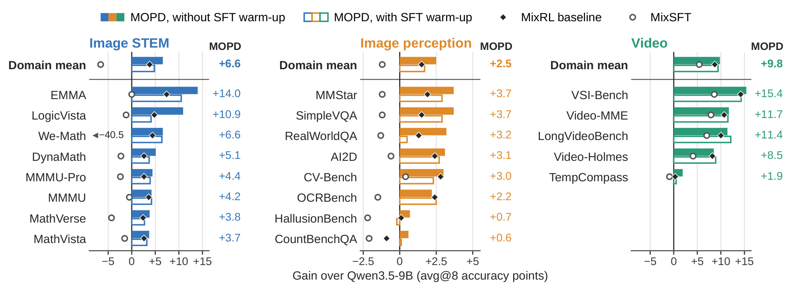
Figure 4 的横轴是相对于 Qwen3.5-9B 的准确率百分点，左中右分别呈现三个域，实心条随直接教师学生分数排序，空心条显示预热教师的学生，点形标记是 MixSFT 与它之后的 MixRL。三域使用不同横轴刻度，因此条的视觉长度不能跨面板直接比较。We-Math 上 MixSFT 的负 40.5 点画成轴外箭头，对应表 3 的 74.8 到 34.3。直接教师蒸馏学生在 EMMA 和 LogicVista 上分别比基础模型高 14.0 和 10.9 点，视频在 VSI-Bench 高 15.4 点，TempCompass 只有 1.9 点。读这种分布应同时看原始分数和差值，题集间的基线高度、选项形式和剩余提升空间本身不同。图里正式混合基线来自 MixSFT，直接起步的 MixRL 要回表 3 核对。如果只看这张图，容易把实心条相对于点标记的差距读成对混合训练路线普遍成立。图上的增益结合表格，支持的是在具体教师和固定底座下蒸馏学生多数基准占优，同时保留了视频个别基准和教师路线间的换位。空心与实心代表两个不同的学生。它们初始化相同，差别来自各自跟随的三位教师，因此差值追踪的是教师训练初始化向学生的传递。
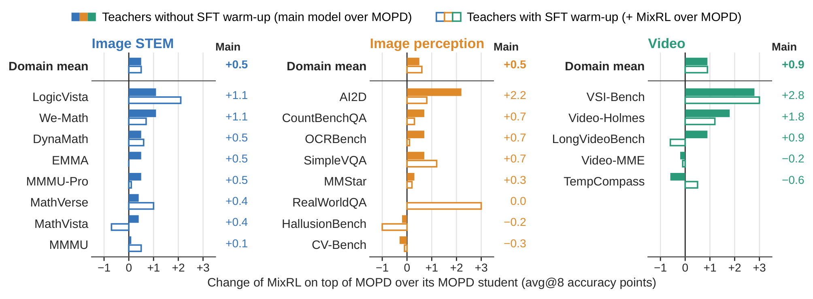
Figure 5 换了基准点，实心是最终模型与直接教师蒸馏学生之差，空心是预热教师分支与它自己学生之差，零线表示该分支接续训练前后的持平。主分支图像 STEM、感知、视频的域均增量为 0.5、0.5、0.9 点。视频增益集中在 VSI-Bench 的 2.8 点、Video-Holmes 的 1.8 点和 LongVideoBench 的 0.9 点，Video-MME 与 TempCompass 分别回落 0.2 和 0.6 点。图像感知的 AI2D 加 2.2 点，CV-Bench 与 HallusionBench 小幅下降，RealWorldQA 持平。按主分支条目有十六项上升、一项持平、四项下降。作者所称没有坍塌，可以在三域均值上升以及短窗内熵维持这些观测中理解，评估集粒度依旧有回撤。空心条也存在和实心条不同的项目，例如 RealWorldQA 上预热分支上升更多。两种教师习得的学生各从自己的支持分布开始采样，后续强化学习的变化方向存在交互。要分清这里的 2.8 点是接续增量，前一图 VSI-Bench 的 15.4 点是从基础模型到蒸馏学生的距离。可按关键基准设最低接受阈值，再用总体分数定次序。若只用后者，四项下滑会被少数较大的结构化视频收益冲淡。
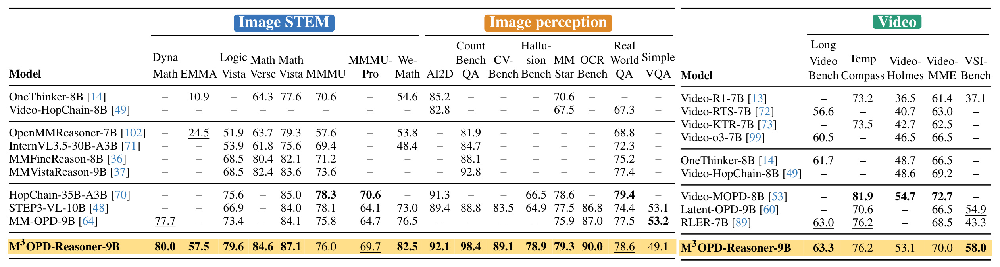
Table 4 左块列出十六个图像基准，右块比较五个视频基准，横线表示缺少公开值。作者自己的结果来自统一八采样协议，外部行来自各论文已发布结果，部分又经其他论文转引。图像上最终模型在 MathVista 得 87.1，超过表中的 HopChain-35B-A3B 85.0，在 OCRBench 得 90.0。SimpleVQA 为 49.1，低于 STEP3-VL-10B 的 53.1 和 MM-OPD-9B 的 53.2。视频侧最终模型的 VSI-Bench 为 58.0，高于列出的 Latent-OPD 54.9，但 Video-MOPD-8B 的 TempCompass、Video-Holmes、Video-MME 为 81.9、54.7、72.7，均超过这里的 76.2、53.1、70.0。最稳妥的结论是同一个九十亿参数模型覆盖三域，并在多项有可比公开值的任务上取得竞争力。若要比较模型族的训练方法，需要同底座和评估配置。即使计算共享基准上的配对均值，也应明确每行用了哪些集。缺失格处理、视频帧数、思考预算和评估采样次数都可能改变排序。表内没有给出统一运行的显存、延迟或训练开销，因此只能把它作为质量参照。活跃参数量和总参数量也需区分，单凭这张表不能做等参数或等推理预算的效率结论。有空白的外部行需要保留缺失状态。
3.4 训练动力学与推理行为
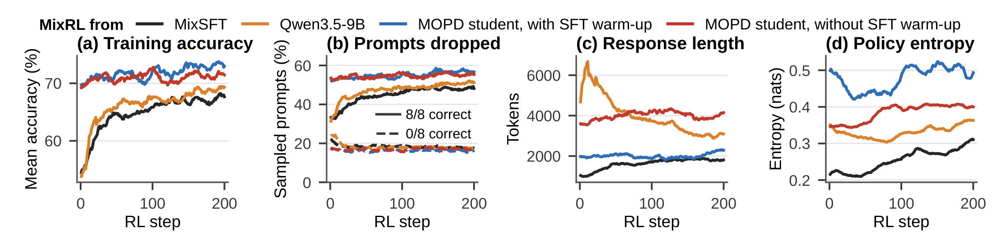
Figure 6 用横轴的训练步观察四个不同检查点，曲线为十步滑动平均。面板（a）展示采样训练提示上的平均正确性，包含随后过滤掉的组。（b）的实线与虚线分别标出八个采样全对与全错的提示比例，两条 MOPD 分支从最初就有过半提示八条全对，且全错组较少。（c）给出训练回答词元长度，直接 MixRL 起初较长而迅速缩短，MixSFT 后的混合强化从较短的回复起步，两个蒸馏起点变化较平稳。（d）是逐词元策略熵，MixSFT 起点偏低，各曲线在图示步数内都未出现明显熵坍塌。较高的起步准确率意味着蒸馏已改变回答分布，也意味着更多简单提示对该起点不提供组内优势。能进入更新的剩余样本在哪些域聚集，原图没有细拆。横轴是步数，附录显示每步提示数有小差异，动态过滤所需的候选采样量也可能不同。所以不能从曲线高度推算总生成开销或可节省的算力。这里的响应长度还是训练混合数据上按词元统计，下一张表中的字符数来自各域评估首样本，两者应分别使用。
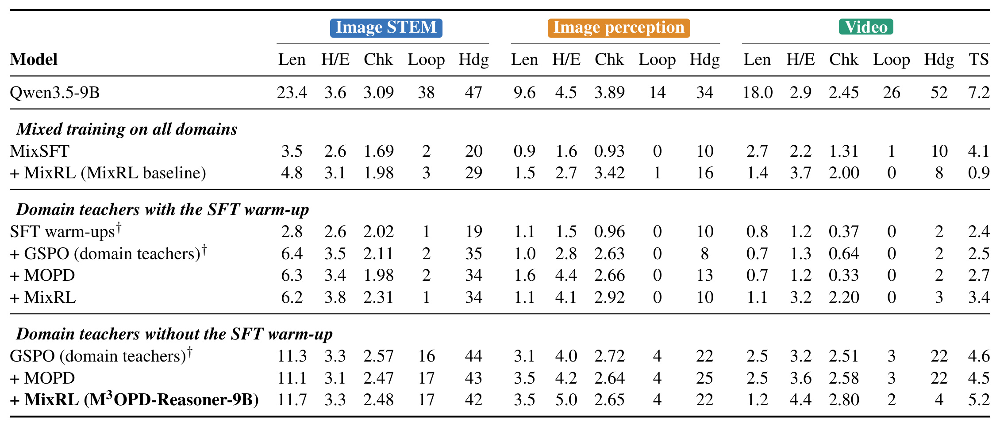
Table 5 取每题八个评估回复中的第一条作推理行为统计，Len 单位为千个思考字符，H/E 是难题和易题的平均篇幅比，Chk 为每千字符自查数，Loop 与 Hdg 分别是循环与犹疑回答占比，视频多了每千字符引用时间戳数 TS。难易题按五类模型的平均求解率分桶，易题至少九成，难题不超过四分之一。直接教师学生在接续 MixRL 后，视频 Len 从 2.5 千降至 1.2 千，H/E 由 3.6 到 4.4，犹疑占比由 22% 到 4%，TS 从 4.5 升到 5.2。每千字符的时间戳密度上升可以和每条引用总量下降同时发生，表中各列也无逐样本联动统计。图像 STEM 的 Len 从 11.1 千到 11.7 千，感知维持 3.5 千而 H/E 由 4.2 到 5.0。正式 MixRL baseline 视频短至 1.4 千字符，TS 只有 0.9，说明短答本身不足以复刻蒸馏后分支的输出样态。这些变量由文本规则和观察定义，时间戳未逐一核实为有效证据，犹疑减少也不能推出置信度校准更好。把视频思考缩短解释成线上延迟改善还需要生成配置、硬件和调度测量。将这种统计和最终回答正确率联表，才能观察缩短是否集中在已熟练的易题，以及时间戳增加的回复是否真的访问了有效片段。
3.5 固定提示过滤及案例
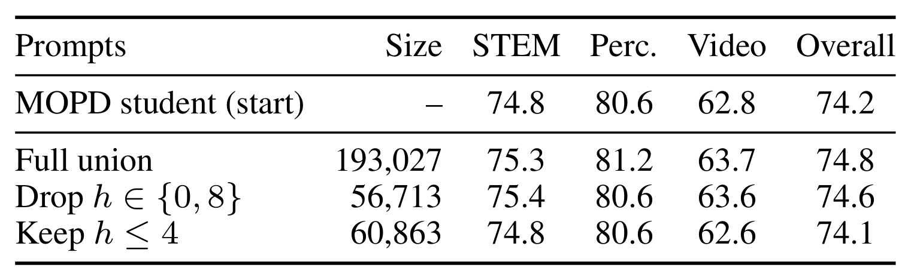
Table 6 对带 SFT 预热教师蒸成的学生进行离线过滤。先对每条提示采八条回答，以准确项至少 0.5 定义一次求解，求解条数记为 h。整池 193,027 条从总体 74.2 到 74.8。排掉八条全对和八条全错之后剩 56,713 条，达到 74.6，图像 STEM 的 75.4 略高于整池 75.3，感知为 80.6 对 81.2。只取 h 不超过四的 60,863 条总体 74.1，视频降至 62.6，低于起点的 62.8。第一种筛法约保留原提示量的三成，筛选本身需要先给全池生成八个回答。这个提示数量缩减不能直接换算成训练总成本，更不能线性折算成训练步数。与训练内的动态过滤相比，这项静态选择依赖初始化时的一组样本，模型更新后原来全错或全对的难题可能产生不同的组差。两组静态子集的域、类型和难度构成未在表中展开，所以可以读到固定过滤的取舍，不能把结果归因于某类具体题目被删除。主路线的教师没有 SFT 预热，这项消融只报告另一分支，外推到最终配方仍需对照。需要多次重采样验证边界提示是否稳定，否则一次八采样就可能改变子集成员。
附录表 17 的 Video-Holmes 案例里，学生围绕误认的事件组织时间戳，最终模型选中了问题所问的事件。另一个 DynaMath 案例里，底座反复检查同一反射关系直到长度上限，域教师换用旋转假设得到正确答案。案例按有一方答对的题目加权选取，用来解释错误模式如何出现。附录表 18 从逐题八次的已解决数算 Spearman 相关，直接分支蒸馏学生对图像 STEM、感知和视频教师分别为 0.90、0.87、0.91。视频思考长度相关由学生的 0.60 降到最终分支的 0.28，同时视频平均准确率提升。教师的每题行为被部分保留，接续奖励更新也会显著改变其中一些习惯。逐题相关描述排序相似性，不能据此判断每条思考链或者其中的时间戳真实可用。
4. 总结
4.1 这组实验支持的决策
如果希望在单一九十亿参数权重中承接三个专长教师，本文最有信息量的结果是同一个学生在三域贴近各自教师，且在同提示条件下比直接混合强化学习的总体均值高。主路线直接训练教师再蒸馏，在本文设置下比带预热的教师路线取得更高分，后续奖励只增加了总体 0.7 点，却在部分视频空间与事件任务上形成更可见的变化。这可以成为选择训练分段的依据。首先看蒸馏后是否保留最难替代的业务能力，再决定是否需要以同一批可核对题目做第二次强化。如果原生起点与监督起点差距很大，比较时应把从两种初始化出发的直接强化都放进矩阵，并保留蒸馏之后、强化之前的可用检查点。作者公开中间阶段入口的价值就在于可以对齐这些阶段。
4.2 结论的适用边界
- 算力口径。 附录描述六十四张八十 GB GPU 的实验资源池，公开配置每阶段以四节点、每节点八卡运行。原文给出训练和采样池分配，也说明教师只预填充、打分可同学生生成重叠。缺少逐阶段总 GPU 小时、生成量和端到端延迟对照，因此不能用同提示这一事实证明相同预算下也占优。三个领域教师本身的成本需要计入。
- 初始化与支持集。 只有 Qwen3.5-9B 这一主底座。教师和学生共用处理器，三域标签是预知的，且每个位置只约束一个教师的前 32 词元。错标签、跨域复合问题、不同 tokenizer、极端长度截断的覆盖一旦改变，当前蒸馏结果未必保持。跨底座迁移要先确定概率对齐可定义。
- 评估粒度。 总体按二十一个基准等权，主分支在几项感知和视频基准回退，外部专用视频模型也还领先部分题集。论文中这张主对照表没有逐训练种子区间。尤其当几十个基准的选模与业务决策绑定时，应避免把零点几分的差距直接当作可稳定复制的排序。
- 行为代理与公开范围。 自查基于短语，循环基于重复文本，视频依据用引用时间戳密度近似。按首样本统计的变化能描述表达方式，还需逐题校验证据与答案的关系。公开视频路数有采样上限，短暂或稀有事件可能不在模型可见帧上。作者声明开放各阶段，页面可达仅确认了入口。
4.3 复现时优先核对的三个问题
- 把表 2 的比较做成同窗分域账。 固定模型初始版本、数据提交、三个教师及学生的检查点，复跑至少直接 MixRL、MOPD 学生和接续 MixRL。对同题记录八条输出，检验逐项增益的区间，优先确认视频两项落后直接 MixRL 的现象。顺带核实提示分片与动态过滤，使有效组数与报告步数能对上。
- 把有效监督和计算量一起记。 按域记录有效组、响应命中长度上限的比例、蒸馏候选词概率质量、教师与采样队列等待、生成词元和实际 GPU 小时。分别对齐等步、等候选生成量或等算力后再比较，如此能检验改善来自更强起点、额外优化预算还是对某类回答的保留。
- 对行为做媒体层核查。 从视频提升集与回退集配对抽样，以相同帧预算人工标注真实证据时段，检查缩短回答后是否仍访问正确片段，并统计每条引用总数与命中比例。对于图像感知可类似检查 OCR 字段、计数类别和跨域题目。如果要迁移给内容推荐，先用可核对的离线证据保住关键覆盖，再单独评估这些变化是否影响下游排序与消费。